Java-1
notes.Java
idea
类转型&多态&契约设计
static、final 和常量设计
static
单例模式
final
常量&常量池
不可变对象
notes.Java 访问权限
notes.Java 类库
数字类
字符串类
时间类
格式化类
Exception
异常分类
异常处理
自定义异常
数组
JCF
List
Set
java中的集合接口Set
Map
Util
File
javaIO
File
文件读写
写入文件
二进制文件读写*
zip读入输出
notes.Java
idea
ctrl+shift+v:替换变量名
ctrl+alt+v:抽取并赋值
ctrl+p:查看参数
ctrl+alt+o删除多余包
ctrl+F12 查看当前类中的包
ctrl+shift+enter 自动完成当前语句
ctrl+shift+backspace 返回到上次修改位置
alt+shift+F9 Debug
类转型&多态&契约设计
类转型：子类可以转父类，父类不可以转子类（除非父类对象本身就是子类）
多态：子类转型为父类后，调用普通方法，依旧是子类方法
契约设计：类不会直接使用另一个类，而是采用接口的形式，外部可以“空投”这个接口下的任意子类对象
static、final 和常量设计
static
static 变量：不管有多少个对象，内存中只有一份
static 方法：可以使用类名直接引用，无需 new 对象来引用
静态方法不可以调用动态变量
非静态方法可以调用静态方法
静态方法不可调用非静态方法
static 块：static 块只执行一次，并且 static 块>匿名块>构造函数
单例模式
设计模式：是经过验证的、用于某些特定场合的解决方案
GOF 提出 23 中设计模式；创建型、结构性和行为型
单例模式保证一个类在内存空间中只有一个对象
内部初始化一个单例
private 不可见，getInstance(static 方法)来取出单例对象
final
final 类：没有子类继承
final 方法：不能被子类改写（不能重写，可以重载）
final 字段：基本类型被能修改值，对象类型不能修改指针（可以修改内容）
常量&常量池
java 中的常量：static 和 final
notes.Java 接口中的变量都是常量
对象生成有两种：常量赋值（栈内存）和 new 创建（堆内存）
常见包装类

java 编译器会优化已经确定的变量
栈内存与堆内存运算会产生新的堆内存（存疑）
不可变对象
不可变对象提高读效率
不可变对象设计的方法
字符串 append 操作速度：StringBuilder>StringBuffer>String
notes.Java 访问权限

notes.Java 类库
数字类
根据数字特点选择合适的类
尽量使用类库自带的方法
整数

浮点数需要注意精度
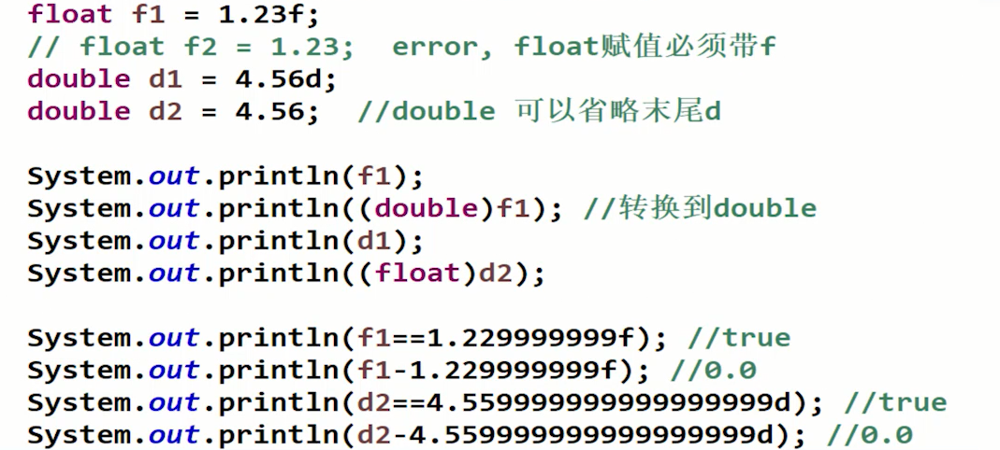 BigInteger
支持无限大的整数运算

BigDecimal -支持无限大的小数运算
注意精度和截断
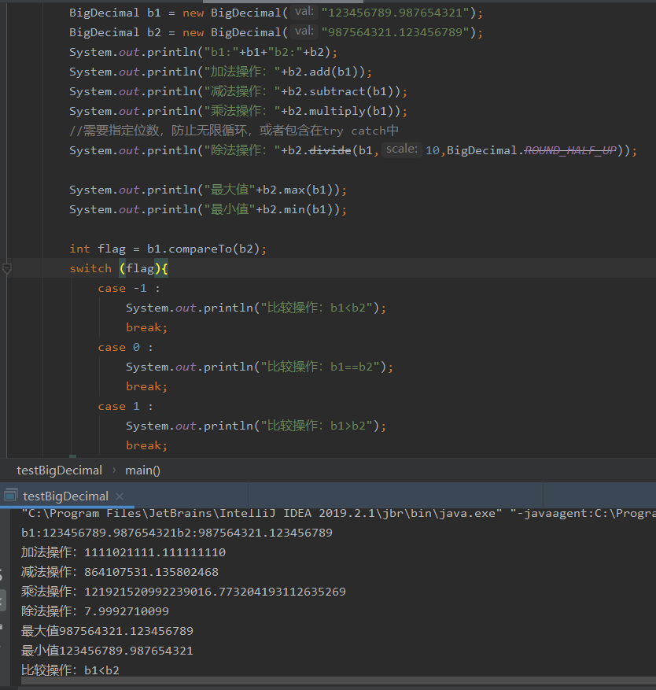
随机数

字符串类
String（不可变对象，只读）
StringBuffer（字符串加减，同步，性能好）
StringBuilder（字符串加减，不同步，性能更好）
时间类
当前多数程序还是使用 calendar 类处理时间

格式化类

NumberFormat

MessageFormat
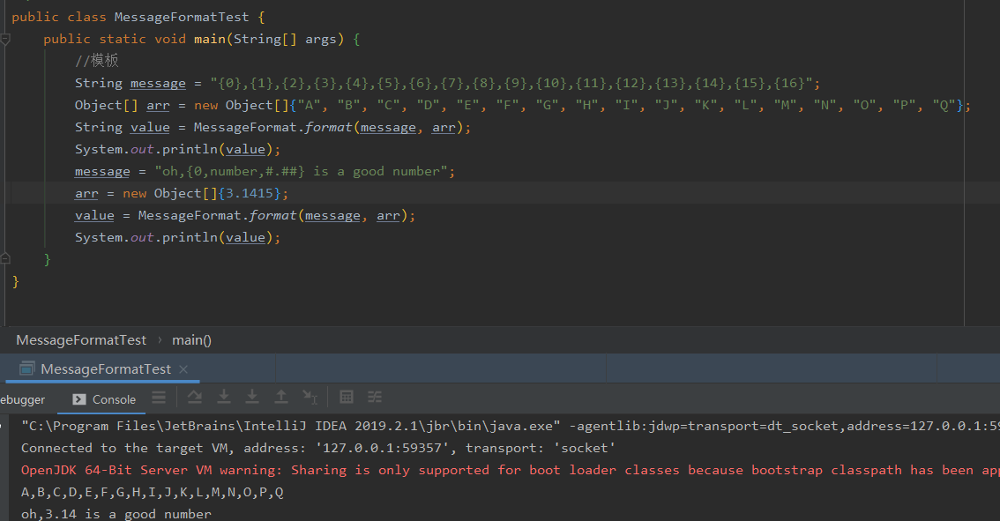 DateFormat

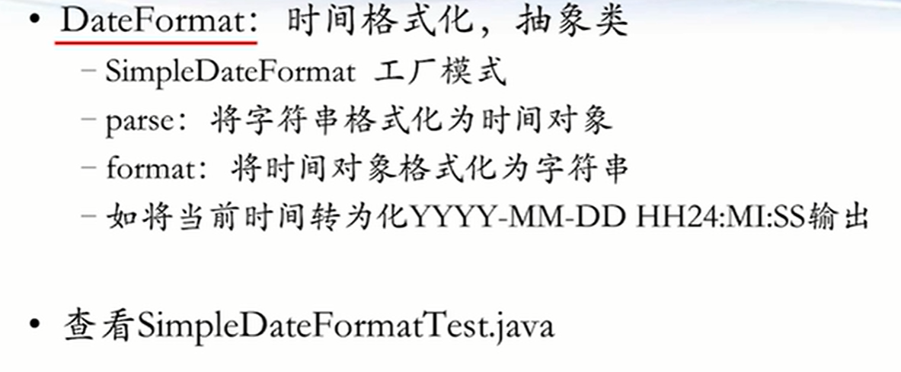 DateFormatter

Exception
异常分类
异常：程序不正常的行为或状态
异常处理：
程序返回到安全状态
允许用户保存结果，并以适当方式关闭程序
异常分类

Throwable:所有错误的祖先
Error：系统内部错误或者资源耗尽
Exception：程序有关错误
又可分为unchecked异常和checked异常，
编译器会辅助检查checked异常
异常处理

try：正常逻辑代码 catch：当try发生异常，将执行catch代码，若无异常，绕之 finally：当try或者catch执行后，必须要执行finally
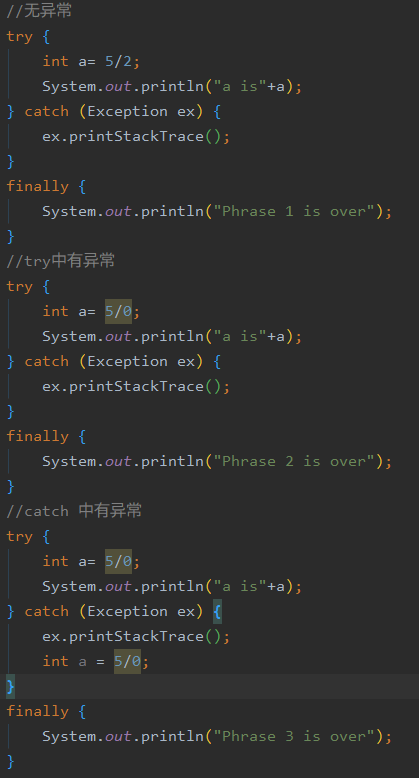 一个try只会进入一个catch，优先级从上而下
throws:抛出异常
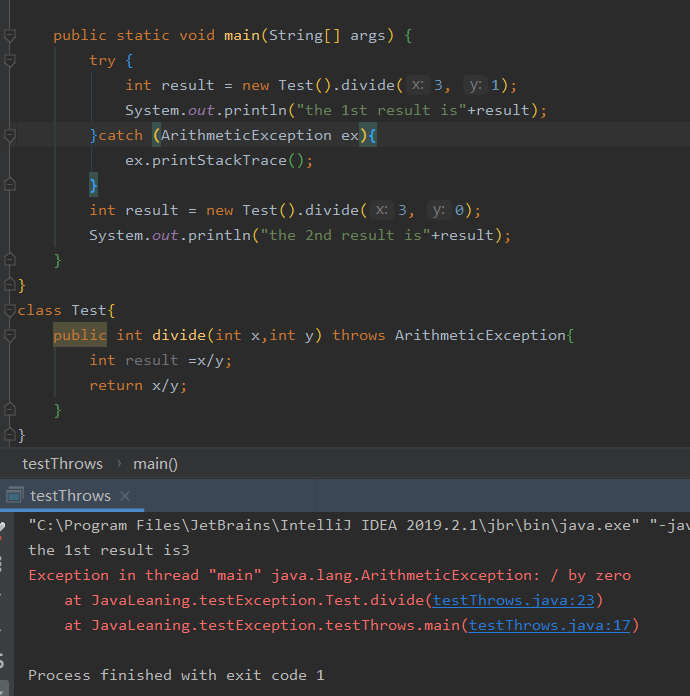 一个方法被覆盖，覆盖他的方法必须抛出相同的异常，或者异常的子类
如果父类方法抛出多个异常，那么重写的子类方法必须抛出那些异常的子集，也就是不能抛出新的异常


自定义异常
自定义异常，需要继承Exception类或者其子类
继承自Exception就变成CheckedException
继承自RuntimeException，就变成Unchecked Exception
自定义重点在构造函数
调用父类Exception的message构造函数
可以自定义自己的成员变量
在程序中采用throw主动抛出异常

异常抛出测试
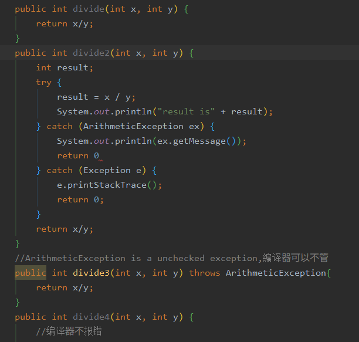
数组
数组是一种确定大小的储存同种数据的容器
初始化和遍历方法
JCF
容器框架的作用
JCF主要数据结构
列表
集合
映射
List
ArrayList ：for循环遍历最快，迭代器最慢 索引位置适中
遍历快
LinkedList ：for循环遍历最快，迭代器适中，索引位置极慢
插入快
Vector（同步）
和ArrayList类似，可变数组实现的列表
Vector同步，适合再 ==多线程== 下使用
迭代器

Set
确定性：对任意对象都能判定其是否属于某一集合
互异性：集合内每个元素都是不相同的， 注意是内容互异
无序性：集合内的顺序无关
java中的集合接口Set
HashSet(基于散列函数的集合，无序，不支持同步)
无序，遍历for快于iterator
LinkedHashSet(基于散列函数和双向链表的集合，可排序的，不支持同步)

存储数据是插入的顺序序，for快于iterator
TreeSet(基于树结构的集合，可排序的，不支持同步)

不可有null，按着从小到大的顺序存储，for快于iterator
Map
Hashtable 同步，慢，数据量小 t是小写
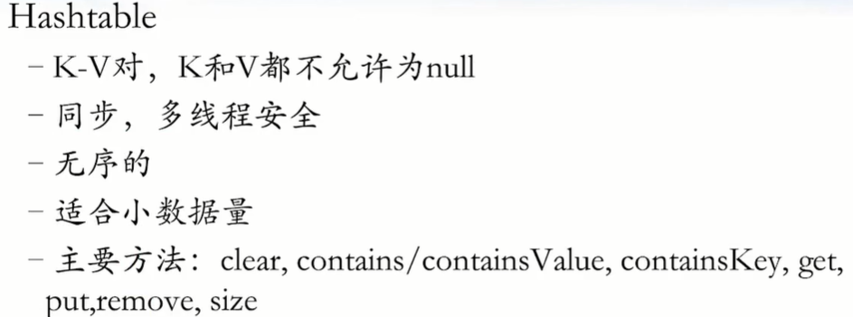 
HashMap 不支持同步，快，数据量大
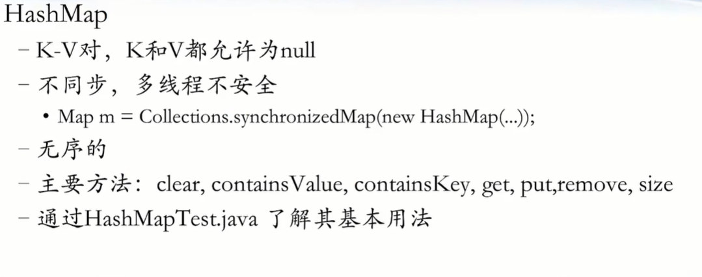 遍历有iterator方法和KeySet方法（hashMap.get(key)）,KeySet方法速度更快
LinkedHashMap
基于双向链表的维持插入顺序的HashMap
TreeMap
基于红黑树的Map，可以根据key的自然排序，按照key的从大到小或者compareTo方法进行排序输出
Properties 同步，文件形式，数据量小


Util
Arrays
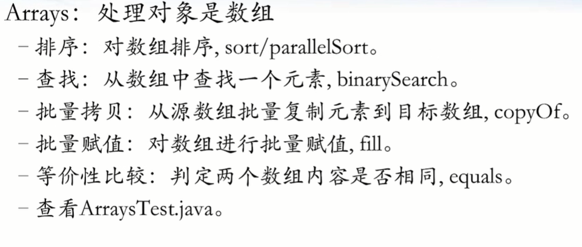 - 补充（fill(数组名，开始位数，结束位数，值))
Arrays.asList(str.split("reg")) 将字符串转化为list
String.join("reg",List) 将list转化为字符串
Collections

-对象的比较
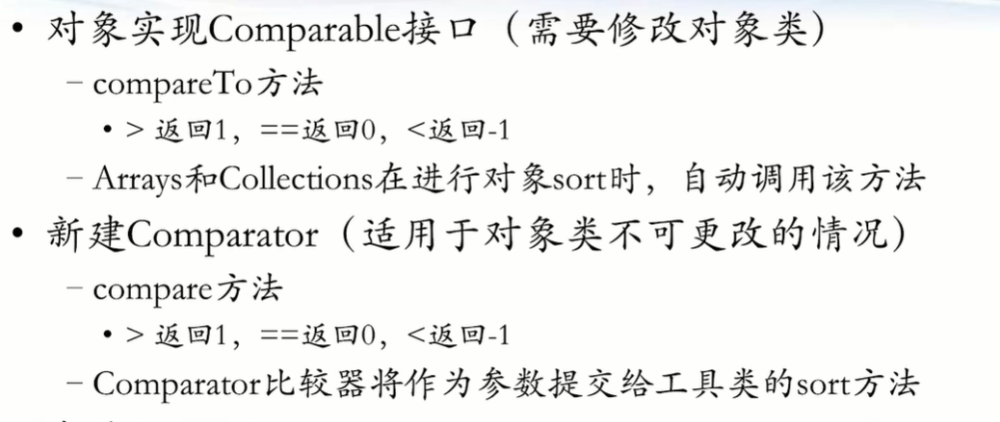
File

文件系统和java是并列的两套系统
File类是文件基本属性操作的主要类
java7提出了NIO包在某些功能上有重要的补充作用


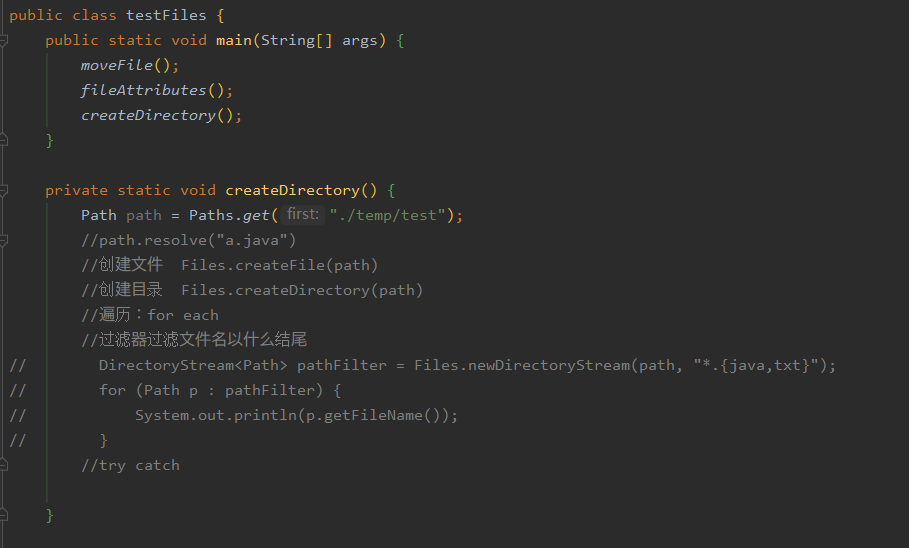 
javaIO

java文件处理类都在java.io包中
处理类分成：节点类、包装类（转化类、装饰类）
File
文件系统和java是并列的两套系统
File类是文件基本属性操作的主要类
java7提出了NIO包在某些功能上有重要的补充作用
文件读写
写入文件
写文件
先创建文件，写入数据，关闭文件
FileOutputStream,OutputStreamWriter,BufferWriter
BufferWriter
write
newLine
try-resource语句，自动关闭资源
关闭最外层的数据流，将会把其上所有的数据流关闭
读文件
先打开文件，逐行读入数据，关闭文件
FileInputStream,InputStream,BufferedReader
BufferReader
readLine
try-resource语句，自动关闭资源
关闭最外层的数据流，将会把其上所有的数据流关闭
尽量使用try-resource方法，自动关闭资源
二进制文件读写
####写入
写文件
先创建文件，写入数据，关闭文件
FileOutputStream,BufferedOutputStream,DataOutputStream
DataOutputStream
flush
write/writeBoolean/writeByte/writeChars/writeDouble/writeInt/writeUTF/...
try-source 语句，自动关闭资源
关闭最外层数据流，将会把其上所有的数据流关闭
读文件
先打开文件，读入数据，关闭文件
FileInputStream,BufferedInputStream,DataInputStream
DataInputStream read/readBoolean/readInt/readChar/readDouble/readFloat/readUTF/...
try-resource语句，自动关闭资源
关闭最外层的数据流，将会把其上所有的数据流关闭
总结： - 理解节点类，转换类，包装类的联合用法 - 读取需要根据写入的规则进行读取，避免错位 - 尽量使用try-resource语句，自动关闭资源